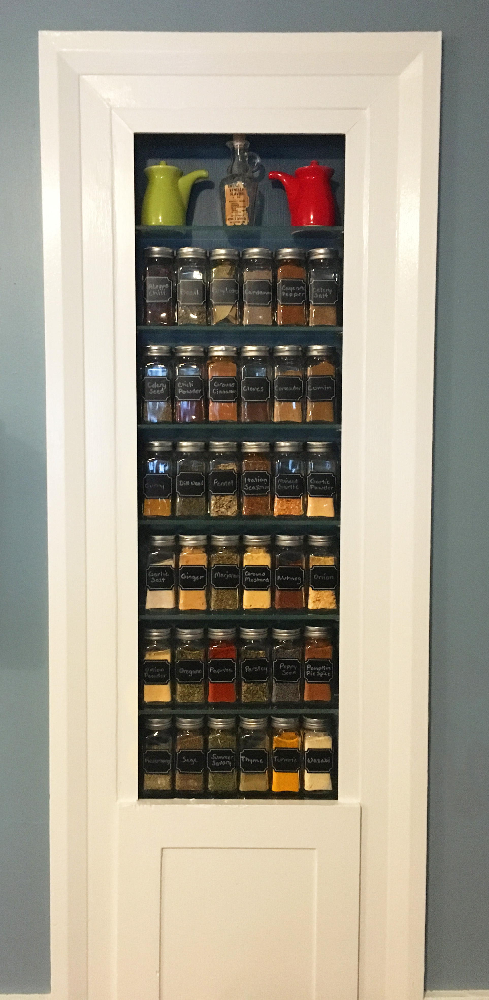

Professional interior design with affordable style for Melrose and the greater Boston area. Whether you just need to freshen up a space or redesign your home, we specialize in updating homes with a sense of place, a focus on comfort, and a love of character.
Let's make home your favorite place to be.
A funny thing happened to me when I stood in front of a 1940s Cape Cod style house in Melrose a little over a year ago.
I fell in love with its possibilities.
I had to look past the overgrown boxwood topiaries and the brownish-red door. I had to look under about 10 layers of paint. But it was there. So much potential. A vision for what could be.
Even though I've worked as a professional interior designer for ten years, it wasn't until we bought that 1940s Cape Cod house that I focused my full attention on residential spaces.
Our house was dated, but it also had the kind of charm that can only be found in homes that have been loved and lived in for a long time.
Once we took a closer look at the walls and ceilings that were lacquered with high-gloss white paint, we discovered crown molding. There was a quaint phone nook in the hall, a built-in cabinet in the dining room, and original hardwood floors.
Then we watched The Money Pit right after we moved in. Too soon. It's billed as a comedy, but when you've just purchased your first fixer-upper, it's not funny. It's frightening!
Yes, our roof was sagging and our 1940s kitchen cabinets were termite-ridden. Choosing what to tackle first was like triage.
We couldn't afford a big kitchen renovation at the time, so we used Lowe's cabinets and counters for a quick and necessary update. Someday, we'll upgrade.
But then came the design!
I could finally make my home everything I'd always wanted a home to be. I wanted a big POP of color in the living room (after living in beige apartments for years), and fun wallpaper, and room for my grandmother's mid-century rocking chairs.
I found myself blending vintage and modern influences that would tell our story, but I was also careful to highlight, rather than hide, the charming quirky details that help tell the story of our house.
That joy - the joy of the design process and the joy of living in a beautiful, character-filled (yet practically modern) home is what I want for you.
My personal style is contemporary, yet comfortable, with a dash of mid-century modern. Think Anthropologie meets West Elm. Color pops make me happy.
And giving old houses fresh charm is my favorite thing to do.
But just because that's my style doesn't mean it has to be yours. You, your family, and your house are unique - and the best interior design is one that helps *you* live joyfully in your home. In fact, you might just call it blissful.
What's it like to work with me? Check out My Process. What can we do together? You can find my Services here. Or contact me now and tell me about your project!